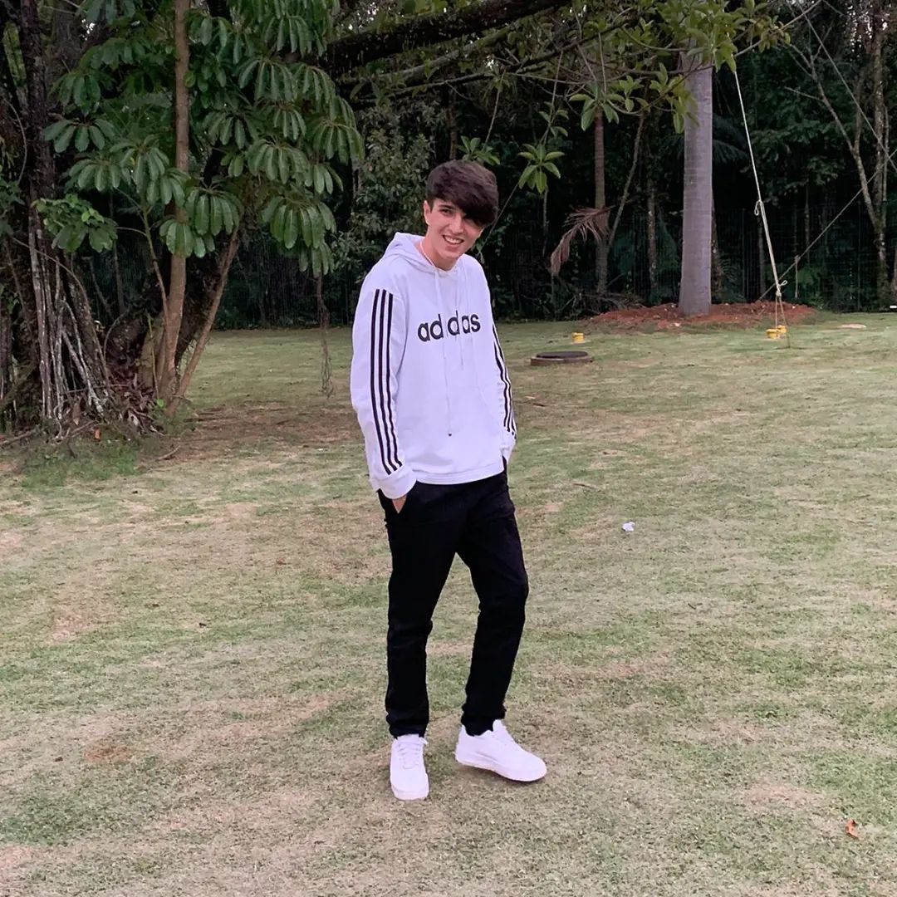

Bem-vindo ao Meu Portfólio
Este site apresenta minha jornada durante o ensino médio, destacando minhas experiências, aprendizados e projetos favoritos em diversas áreas do conhecimento.
Reflexão sobre o Ensino Médio
Durante o ensino médio eu cresci como pessoa, eu com certeza não sou o mesmo cara que entrou no primeiro ano.

Tarefas Favoritas e Aprendizados
Tarefa 1
Uma das minhas tarefas favoritas foi a integrada do segundo ano em que tivemos que fazer uma maquete. Nela eu aprendi a usar ferramentas como o fusion e aprendi a abilidades manuais.
Tarefa 2
A tarefa final de Iot do segndo ano foi muito legal para mim, pois ela fez a gente criar um cabeamento seguindo normas e integrando dispositivos Iot em certas partes do senac. Esse projeto fez eu aprende como agir como empresa.